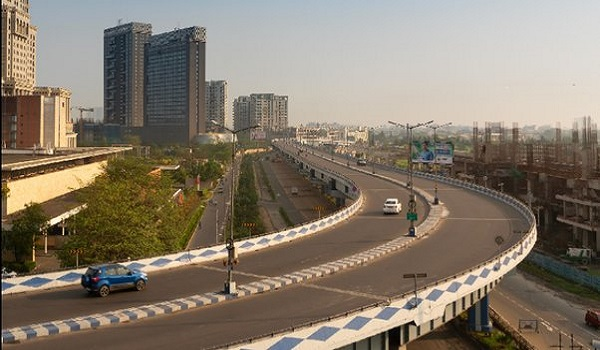

KIADB Bagalur

KIADB Bagalur is emerging as an important growth corridor in North Bangalore, supported by expanding industrial activity, improving infrastructure, and increasing residential development. The location is particularly relevant for buyers who want to live closer to employment zones while avoiding the density of established central areas.
With more residential projects entering the market, Bagalur is gradually moving from a peripheral location toward a more developed urban neighbourhood. Bhartiya City Nikoo Homes 9 is set to launch premium apartments in this location, adding a new residential option for buyers considering North Bangalore.
The development of KIADB areas has a direct impact on nearby housing demand. As businesses, industrial units, and employment opportunities expand, the surrounding areas require housing for employees and their families.
Bagalur benefits from its position within the wider North Bangalore growth belt. Its connectivity toward the airport region and other employment destinations makes it relevant for professionals who want a residential location with access to major work centres.
For an end-user, the main advantage of buying in a developing location is the opportunity to plan for long-term living rather than immediate dependence on a fully established neighbourhood.
Families considering Bagalur can evaluate the area based on everyday requirements such as road connectivity, schools, healthcare, retail facilities, public transport, and access to workplaces.
As more residential communities are developed, supporting social infrastructure is also likely to expand. However, buyers should assess the infrastructure that is already operational rather than basing their decision entirely on future proposals.
KIADB Bagalur can be considered by buyers with a medium- to long-term residential horizon.
Those planning to move within the next few years should check the current availability of schools, hospitals, supermarkets, public transport, and commuting routes around their workplace. Buyers who are comfortable with a developing neighbourhood may find the area's future expansion more relevant.
For families, the decision should primarily depend on daily commute time and access to essential services rather than only the expected appreciation of property prices.
Nikoo Homes 9 is planned as a luxury apartment development in KIADB, Bagalur. The project is expected to offer 2, 3 and 4 BHK apartments, with an indicative starting price of ₹1.2 Cr onwards*.
The project is currently in the pre-launch stage, with RERA approval awaited. For buyers considering the project for future occupation, the proposed December 2030 possession provides a longer planning horizon, subject to approvals and construction progress.
The future of KIADB Bagalur is closely connected to employment growth and infrastructure development across North Bangalore.
As industrial and commercial activity expands, residential demand can increase around employment clusters. Better road connectivity and improvements in public infrastructure can further strengthen the area's accessibility.
The important point for buyers is that development may happen progressively. Bagalur's long-term potential should therefore be evaluated against actual infrastructure delivery, employment creation, and residential demand over time.
From an investment perspective, Bagalur is more suitable for buyers with a longer holding period than those looking for quick returns.
The investment case depends on several factors:
Property appreciation is not guaranteed, and future returns will depend on how quickly the surrounding area develops.
Before purchasing property in KIADB Bagalur, buyers should examine both the project and the locality separately.
Important considerations include:
This approach provides a more realistic assessment than relying solely on future-growth expectations.
KIADB Bagalur is developing as a residential and employment-linked location in North Bangalore. Its long-term prospects are supported by the wider expansion of the northern part of Bangalore, but the pace of growth will depend on infrastructure execution and sustained demand.
For homebuyers, the location can make sense when the commute, daily facilities, and future living requirements align with their needs. For investors, the area is better viewed through a long-term growth perspective, with actual infrastructure and market performance remaining the key factors.
With Nikoo Homes 9 planned in this emerging corridor, buyers can evaluate the project alongside the broader development trajectory of KIADB Bagalur, rather than considering the apartment project in isolation.